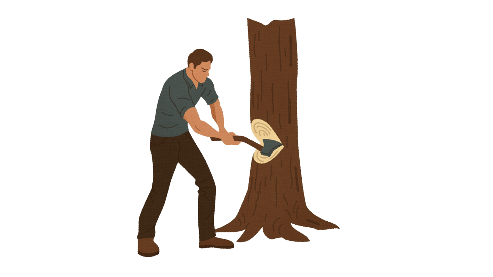
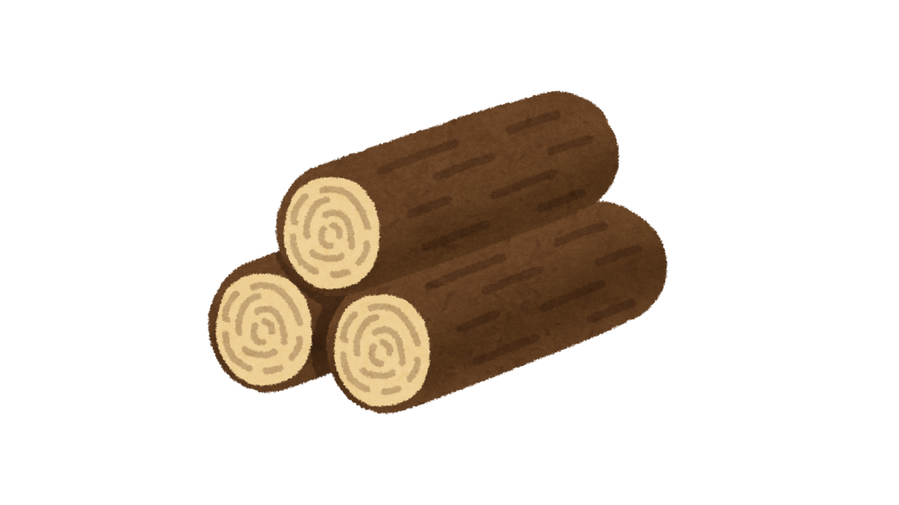
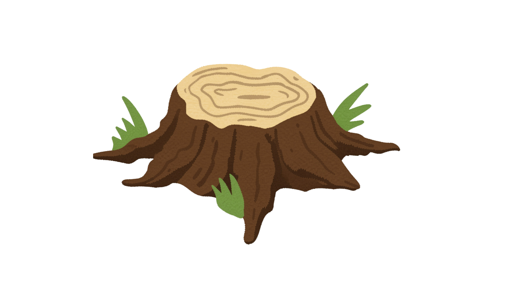

Tree felling involves making skilled cuts to safely control a trees descent to the ground. If you want some trees gone and have the space to fell them but dont have the gear, knowledge, or just don't want to, then thats where George comes in.

George is well versed in Advanced Felling and Chainsaw techniques so he can handle trees in various situations.

After he has felled your trees George also knows to process the trees and leave them in a state that works for you.

While we can't grind the stumps out, on smaller stumps we may be able to manually remove them. With all other stumps we can cut them to ground level or leave to as a natural feature that can be carved.